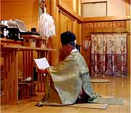
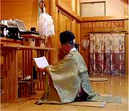

郵送祈願の御案内
投稿日: 2024.01.01
当分祠では、ご遠方の方や諸事情により御参拝に来られない方のために、郵送での御祈願をお取次ぎしております。ご希望の方は、郵便振替又は郵便書留にて御初穂料を添えて、祈願内容、郵便番号、住所、氏名、生年月日、電話番号を明記しててお申込み下さい。ご入金を確認の上、ご祈願を斎行し、御札をお送りいたします。郵送祈願の御初穂料は、五千円以上です。
当分祠では、ご遠方の方や諸事情により御参拝に来られない方のために、郵送での御祈願をお取次ぎしております。
ご希望の方は、郵便振替又は郵便書留にて御初穂料を添えて、祈願内容、郵便番号、住所、氏名、生年月日、電話番号を明記しててお申込み下さい。ご入金を確認の上、ご祈願を斎行し、御札をお送りいたします。郵送祈願の御初穂料は、五千円以上です。
良縁・家内安全・商売繁盛・厄除・交通安全・安産・合格・病気平癒等、その他諸祈願をたまわります。御祈願の頁もご参照下さい。
良縁・家内安全・商売繁盛・厄除・交通安全・安産・合格・病気平癒等、その他諸祈願をたまわります。御祈願の頁もご参照下さい。
皆様方が、御親大神様の幸せのご縁を頂かれまして、願いが成就されますよう、お祈り申し上げます。社頭での参拝祈願をご希望の方は、「御祈願」の頁をご参照頂き、お電話でお問い合せ下さい。御祈願された方には、御祈願の内容に応じた御神符をお送り致します。
皆様方が、御親大神様の幸せのご縁を頂かれまして、願いが成就されますよう、お祈り申し上げます。社頭での参拝祈願をご希望の方は、「御祈願」の頁をご参照頂き、お電話でお問い合せ下さい。御祈願された方には、御祈願の内容に応じた御神符をお送り致します。
出雲大社東京分祠〒106−0032東京都港区六本木７丁目１８－５TEL：０３−３４０１−９３０１（九時より五時まで）
〒106−0032東京都港区六本木７丁目１８－５
〒106−0032東京都港区六本木７丁目１８－５
 
